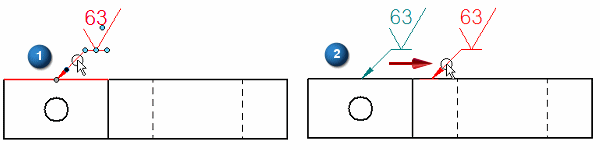
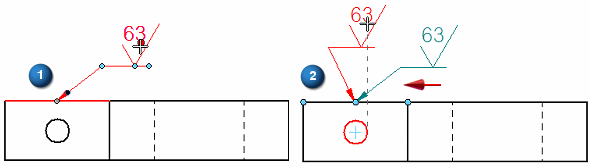
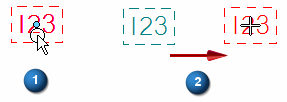
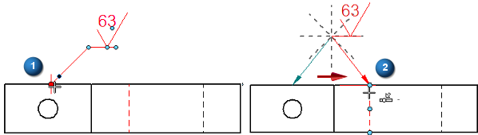
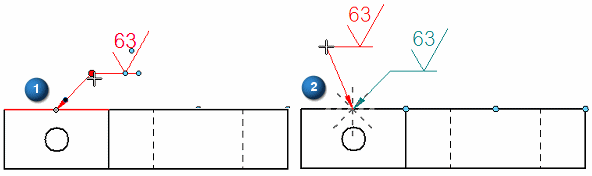
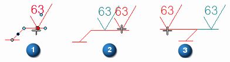
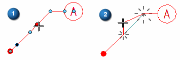
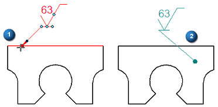

Edit an annotation
General procedure
-
Click an annotation to display its handles.
Note:Not all annotations have the same number of handles. Annotations with break lines have more handles. For examples of the annotation handles, see the help topic Annotation edit handles.
-
Position the cursor over the annotation handle you want to manipulate, and then click+drag (or Alt+click+drag) the handle.
Refer to the following procedures for specific examples.
Move the entire annotation
Click the annotation to display its handles, and then do any of the following:
-
To reposition an annotation along an element, without changing anything else, drag the leader line (1) to a new location (2).

-
To freely reposition an annotation without disconnecting it, drag the move handle at the center of the annotation (1) to a new location (2).

-
To freely move an annotation without a leader, such as the callout shown below, drag the move handle (1) to a new location (2). You also can drag the annotation by grabbing its border or edge.

Change the leader or break line
Click the annotation to display its handles, and then do any of the following:
-
To reposition the attachment point of the terminator while maintaining associativity, drag the connection handle (1) to a new location (2) on the same element.
Using this technique, you can change the leader angle by snapping to orientation lines.

-
To freely change the leader length, angle, and orientation, drag the leader edit point (1) in any direction. Release it on one of the dashed lines to snap to that orientation (2).

-
To edit the break line, drag a break line edit point (1) to lengthen or shorten the break line (2), and to flip the annotation and break line to the opposite side of the leader (3).

-
To create a multi-segment leader line, Alt+click the leader where you want to insert a vertex.
-
To edit a multi-segment leader line, drag an inserted vertex point on a leader line (1) to a new location (2) to change the orientation and position of that line segment. Use the snap-to indicators to orient the leader segment.

Detach and reattach an annotation
Click the annotation to display its handles, and then do any of the following:
-
To detach an annotation, Alt+drag the terminator handle (1), and then release the Alt key when the terminator is in its new location (2).
The terminator type automatically changes to the active setting for a terminator in free space.

Tip:To verify the annotation is detached, drag the drawing view or drawing element to which it was attached. Observe that the detached annotation does not move with it.
-
To reconnect an annotation, drag the connection handle onto a drawing element or onto an element in a drawing view.
The terminator type automatically changes to the active setting for a terminator connected to an element.
Tip:To verify the annotation is attached, drag the drawing element or the drawing view. Observe that the annotation moves with it.
-
To move the annotation terminator off an element yet still maintain associativity with the element, Alt+Ctrl+drag the terminator handle to a new location or free space.
The terminator changes shape to the free space terminator, but it remains associative.
Tip:If you move the element or drawing view with which the annotation is associated, the annotation also moves to maintain the same relative orientation.